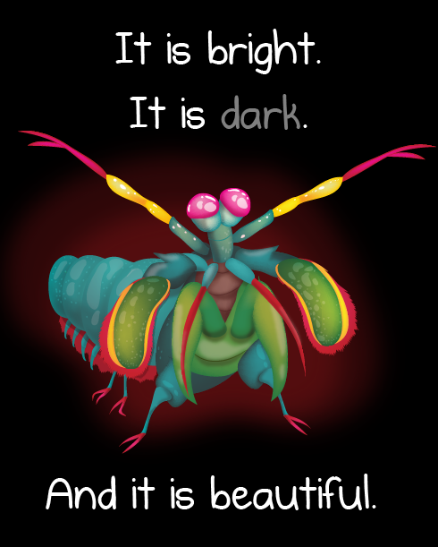

Um boxeador de respeito
Mas não se engane, apesar de serem criaturas que tem uma percepção tao aguçada da beleza das cores, o camarão mantis
é um pesadelo dos oceanos.
Pode ser considerado uma das criaturas mais violentamente criativas do planeta, possuindo dois
apêndices raptoriais na frente de seu corpo, que pode chegar a ter uma aceleração equivalente ao tiro de um rifle calibre .22,
em cerca de três milésimos de segundos pode acertar uma presa com uma força de 1,500 Newtons, para se ter uma noção, se humanos
conseguissem acelerar os seus braços a 1/10 dessa velocidade, seriamos capaz de jogar uma bola de baseball em orbita.
Os apêndices se movem tão rapido que a agua ao redor ferve, num processo conhecido como supercavitação, quando essas
bolhas da cavitação entram em colapso elas produzem uma onda de choque na agua, que pode matar a presa mesmo errando o alvo,
a força dessas bolhas colpasantes também produz temperaturas muito altas, capazes de emitir pequenas explosões de luz, chamado de
sonoluminescencia.
Sendo assim o camarão mantis é o grande resposavel por arco-iris banhados em sangue, sendo uma das criaturas mais incriveis do nosso planeta.
